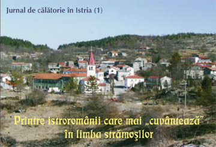
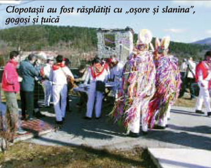
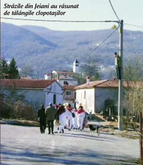

O bătrânică de vreo 80 de ani se apropie de noi pe ulița din Jeiăni. "Dobar dan," ne salută ca pe străinii pe care nu i-a mai văzut niciodată în satul ei. "Bună ziua," îi răspundem noi. "Bură zi. Voi cuvântați pe limba noastră?," s-a mirat bunicuța, care imediat a început să ne arate unde stă ea, care este fiul său din ceata de clopotași, ne-a întrebat de unde am venit, cum ne place la ei...
 Toate astea s-au întâmplat într-o însorită dar vântoasă zi de început de Mărțișor, în nordul Muntelui Mare (Monte Maggiore) din Istria, la doar câțiva kilometri de granița cu Slovenia, într-o zonă unde și azi se mai poate auzi al patrulea dialect al limbii române: istroromâna. Însă nu este suficient să vizitezi aceste sate ca turist, pentru că atunci nu-i sigur că vei avea norocul să-i cunoști pe istroromâni (cirebiri sau cici, de unde provine și numele zonei din nord-estul Istriei, Ciceria), să-i auzi vorbind pe limba lor. Echipa din România, căreia m-am alăturat și eu, a fost invitată în această zonă minunată a peninsulei Istria de către domnul dr. Emil Petru Rațiu de la Roma, președintele Asociației Culturale Istroromâne "Andrei Glavina," unul dintre puținii cunoscători ai problemelor actuale ale istroromânilor, care a învățat limba lor, editează revista în dialect "Scrisore către fraț Rumer," a făcut cunoștință cu zeci de familii istroromâne și este primit în casele lor din Jeiăni, Mune sau Sușnievița ca o rudă îndepărtată (cum de fapt și este întreg poporul român).
Cine sunt istroromânii?
Această populație, care mai trăiește în mod compact în circa 10-12 sate din nordul Croației, lingvistic și nu numai, face parte din trunchiul românismului. Despre trecutul istroromânilor sunt cunoscute doar puține date concrete. Mai mult ca probabil, în cazul lor se poate vorbi de mai multe straturi care s-au suprapus. În zonele muntoase și împădurite ale peninsulei, au continuat să trăiască de la sfârșitul antichității romanici vorbitori ai unei limbi latine în curs de a deveni vechea limbă românească. Acestora li s-au afiliat apoi alți români, veniți din părțile vestice ale Transilvaniei, precum și din Ungaria actuală (aflăm dintr-un studiu al istoricului dr. Gheorghe Zbuchea de la București). Această comunitate etnică este amenințată astăzi, poate mai tare decât oricând, cu dispariția, pe de o parte datorită asimilării, iar pe de altă parte datorită emigrărilor masive din ultimele decenii. Scriitorul italian Ezio Bortul, și el de origine istroromână, ne-a spus că astăzi New Yorkul are mai mulți istroromâni decât Sușnievița, Bărdo, Noselo și Sucodru la un loc, iar cartea de telefoane din Opatija sau Rijeka cuprinde zeci de Turcović, Sanković, Doričić, nume care arată originea din satele istroromâne.
Limbă și tradiții
 Am sosit la Jeiăni marți dimineața, la 4 martie, ziua care în calendarul catolic marchează încheierea perioadei carnavalului început pe 6 ianuarie. Primul semn care a arătat că în sat e "pust" (cum ziceau gazdele noastre la carnaval) a fost că pe un stâlp din mijlocul satului era spânzurată o păpușă, iar în scurt timp s-au deschis porțile caselor, ieșind de acolo bărbați tineri, îmbrăcați în haine albe, pe cap purtând clop împănat cu sute de fire colorate, pe umeri și la șale legați cu blănuri și cu câte trei tălăngi. Când s-au adunat cu toții și au plecat spre satul vecin Mune Mare (Male Mune), în fruntea alaiului au stat stegarul și căpitanul, ca un fel de conducător al echipei. Acestora li s-au mai alăturat muzicanți și câteva fete, care au adunat într-un coș tot ceea ce "colindătorii" au primit de la casele la care au intrat: ouă, slănină și niște bani ("oșore, slanina și bani," tot "bani" le spun și ei). Pe "Žejanski zvončari," cum se numesc clopotașii din Jeiăni, îi deosebește în practicarea acestor obiceiuri de alți "zvončari" (clopotași) din zonă faptul că ei cântă și pe limba lor, în istroromână. Clopotașii noștri au bătut în ultima zi a carnavalului la ușile a circa 150 de case din Mune și Jeiăni, fiind serviți cu gogoși și diferite băuturi. Din tot ce au adunat clopotașii de pe la case, sâmbăta următoare s-au făcut omlete și slănină prăjită care au fost servite la ultimul bal dinaintea postului pentru toți locuitorii satului. Dar încă înainte de aceasta, în ziua de miercuri, păpușa agățată de un stâlp a fost dusă cu căruța la marginea satului și a fost arsă, simbolizând sfârșitul "pustului". În timp ce păpușa arde, tot satul bocește.
Asemănări și deosebiri
 "Feciorii mai cunosc obiceaiurile noastre, înțeleg limba, dar n-o mai cuvântează," ne-au spus mai mulți dintre localnicii din Jeiăni, considerând acesta un lucru care nu mai poate fi oprit. Istroromânii nu au școli, nu au asociații, nu au nici o organizație (în afară de cea a domnului Rațiu) care ar lupta pentru păstrarea graiului strămoșesc. În bisericile lor catolice se slujește numai în limba croată. Totuși, ceea ce m-a uimit și, totodată, m-a întristat când le-am ascultat pe gazdele noastre a fost că între istroromânii din Istria și românii din Ungaria sunt multe asemănările. Și nu înspre bine. În vorbirea lor de acasă, și istroromânii au tot mai multe cuvinte croate, tot ce este nou în lumea de azi ajunge la ei pe calea televizorului sau a radioului, acestea recepționându-le doar în croată sau italiană. Decât că ei sunt la 1.000 de km de România, iar noi aici, în vecini. Ei nu au biblioteci înzestrate cu cărți românești, nu pot prinde posturi tv sau radio în limba română... Unii cunoscători ai problemei istroromânilor presupun că existența lor ca etnie ar putea fi prelungită în cel mai bun caz (de ex. prin cursuri de limbă) cu încă o generație. Numai Dumnezeu poate ști...
Eva Iova
March 14, 2003
© 2003 Foaia Românească